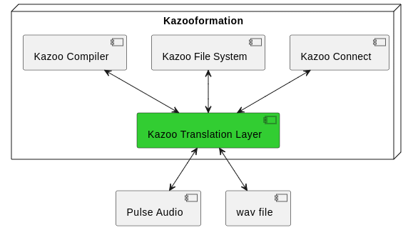

|
Kazooformation
1.0
Send and receive data using Kazoo noises; an engaging teaching tool for the lowest layer of the OSI model.
|
|
Kazooformation
1.0
Send and receive data using Kazoo noises; an engaging teaching tool for the lowest layer of the OSI model.
|
An engaging teaching tool for the lowest layer of the OSI model. Send and receive data via sound using kazoo noises!

The primary component of this project is the Kazoo Translation Layer (KTL), which is a C++ library that converts any serialized data to and from kazoo sounds using various modulation techniques.
Here is an example of how data is translated into kazoo sounds using one of the basic binary models:
And this is what that sounds like:
https://github.com/user-attachments/assets/2616b039-56e6-47bb-b4c9-5c690887d0fb
Kazoo Connect is an application example of the KTL library. It's a bare bones chat client that can be used to communicate between two computers using only audio peripherals.
Simple CMake/GCC build system
Build Essential, Lib FFTW-3, and Pulse Audio must be installed.
The executable kazoo_connect_server runs a very basic http server that can be used alongside a react app found in ./src/kazoo_connect_server/web_client. This can be run like any other NPM project.
This project does not have a license yet, please contact me if you want to use this or need a license applied.
src/web_client/public/soundwave.svg is from https://composeicons.com/icons/bootstrap/soundwave, it falls under the MIT license.